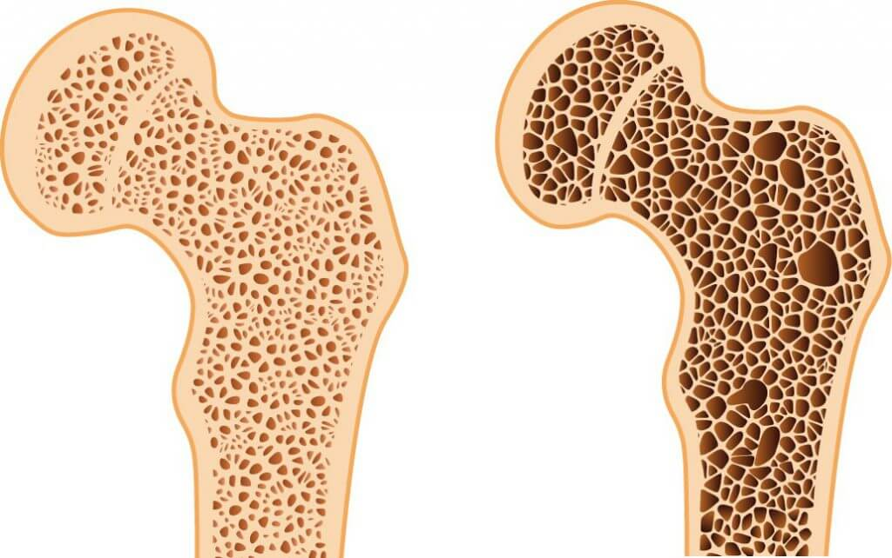

Foto: EAST NEWS
Foto: EAST NEWS
En los últimos 20 años, el número de personas que sufren de enfermedades de las articulaciones ha aumentado casi el doble, y la edad promedio de las personas afectadas ha disminuido a 24 años. Es culpa de todo el estilo de vida sedentario de las personas modernas, el tabaquismo, el alto nivel del estrés y la alimentación incorrecta. La artritis es una enfermedad grave que puede hacer que una persona sea discapacitada en varios años. ¿Cómo protegerse de la silla de ruedas y curar las enfermedades de las articulaciones para siempre?

Síntomas de la artritis
La artritis tiene una serie de síntomas:
- Crujido en las articulaciones
- Gravedad de los movimientos
- Dolor óseo
- Tensión en la espalda
- Agujeta en el cambio del tiempo
- Sensación de rigidez
- Debilidad general del cuerpo
- Hinchazón o aumento de la articulación

Artritis: ¿qué es eso?
El mecanismo de la aparición de la artritis es relativamente simple y se ha estudiado durante mucho tiempo. La enfermedad, a menudo, ocurre cuando en el cuerpo entran microorganismos patógenos. En este caso, se desencadena una reacción inmune natural que suprime la infección. Debido a fallas en el sistema de protección, la inmunidad destruye tanto las células alienígenas como el propio tejido cartilaginoso.

¿La innovación ayudará?
En marzo de 2019, científicos de la Universidad japonesa de Osaka publicaron una declaración sobre un nuevo método de tratamiento de la artritis – inmunoterapia . La inmunoterapia ayuda al cuerpo a combatir solo la infección sin destruir sus propias articulaciones. Desafortunadamente, no encaja con todos. Su costo es muy alto y no siempre da el resultado. Hay otro inconveniente grave de la inmunoterapia: si no le conviene, puede causar la destrucción total del tejido articular. Muchas personas con artrosis se han convertido en discapacitados debido a la inmunoterapia. Su cuerpo no la tomó.
Alternativa a la inmunoterapia
No se puede ignorar el dolor: la artritis no pasa por sí misma. Con el tiempo, la enfermedad progresa y será mucho más difícil de curar que en las primeras etapas. Además, no es posible soportar este dolor grande, le impedirá disfrutar de la vida, trabajar e incluso dormir.
No se puede ignorar el dolor: la artritis no pasa por sí misma. Con el tiempo, la enfermedad progresa y será mucho más difícil de curar que en las primeras etapas. Además, no es posible soportar este dolor grande, le impedirá disfrutar de la vida, trabajar e incluso dormir.
La Organización mundial de la salud, en el marco del proyecto 'Vida sana', junto con los médicos de Japón, ha desarrollado un medicamento innovador contra la artritis. Este remedio bloquea la reacción agresiva del cuerpo a las articulaciones, analgésica y no daña la salud.
Hace unos meses, la novedad apareció en los estantes de las farmacias, pero otros fabricantes comenzaron a expulsarla: este remedio es más barato y efectivo y puede reducir las ventas en otros medicamentos para las articulaciones.
El proyecto de fabricación del fármaco se reinició de nuevo, la composición se complementó, y se decidió venderlo a través de Internet, para que la gente ya no hiciera cola en las farmacias.
Tratamiento de la artritis sin consecuencias
Hoy en día es el único remedio capaz de detener los procesos inflamatorios en las articulaciones y ser analgésico sin efectos secundarios.
tiene un efecto de bienestar en las articulaciones, alivia la hinchazón y el dolor . En su composición, el aceite de hígado de tiburón, que es uno de los ingredientes clave, tiene una propiedad curativa en el cuerpo debido a losalcoxiglicéridos contenidos en él. Proporcionan estimulación energética del cuerpo, promueven la curación de los tejidos óseos. En combinación con aceite de eucalipto, ginseng y extracto de propóleos, el aceite de hígado de tiburón ayuda a aliviar los síntomas de la artritis y se siente mucho mejor.
Para obtener el mejor efecto, debe usar varias veces al día y realizar pequeñas actividades físicas . Puede caminar al aire libre, nadar, hacer aeróbicos o bailar y cualquier cosa que desee. Los científicos afirman que esta remedio es capaz de convertirse en el principal tratamiento para la artritis.

Hoy en día, es uno de los mejores medios para tratar la artritis . se produce solo en Japón, pero los médicos planean establecer ventas en todo el mundo. Hasta que esto suceda, los expertos venden la remedio dos veces más barato de lo que estaban planeando. Una vez que puedan vender la remedio en todo el mundo, aumentarán el precio. Los médicos no proporcionarán suministros mundiales, si continúan vendiendo tan barato, simplemente se arruinarán. El tiempo queda muy poco para tener tiempo para comprar a un precio récord.


Comentarios:
Hace poco, me pedí ¡y en unos días ya tenía el fármaco en mi casa! ¡Ha sido más rápido que el correo express! Muchas gracias.
Julia Saavedra
¿En serio? ¿Esta remedio puede resolver el problema?
Julia, eso es. ayuda incluso en los casos más desesperados. La remedio se aplica frotando hasta la penetración completa, alivia bien el dolor y trata. Es mucho mejor que una tonelada de tabletas, inyecciones y goteros. Pruébalo, te ayudará, ¡te lo digo yo!
Me gustó . ¡Voy a pedirme otra unidad!
Pedí para mi madre. Antes de usar , ella apenas podía levantarse: tenía articulaciones hinchadas y la piel cerca de ellas estaba caliente. ¡Tanto que sufría ella! Una vez que empezó a usar , mi madre se olvidó de cuántos años tenía. ¡Las piernas no le duelen, las manos están bien, se ocupa de su Jardín favorito y de nietos! ¡Tiene 80 años!
¡Buen artículo!
¡Me puse de pie después del primer curso de ! Todos los que están pensando que esta remedio es una porquería, ¡entonces pierden mucho!
Camila Celia
Me interesó, quiero probarla
¡No lo creen, pero yo ya he tenido un bebé!)) Estaba preocupada de que las articulaciones doloridas complicaran mi embarazo y, por lo tanto, no me atrevía a tener un niño, (( He probado todo: remedios hormonales, inyecciones, un montón de pastillas, ¡nada me ayudaba! Luego mi amiga me aconsejó la remedio . En un curso me sentí mejor y el mes siguiente ya hemos comenzado a esperar al primogénito)) ¡Ahora estamos planeando tener el segundo hijo!
Elena García
¡Sí, los niños son felicidad, y los nietos son dos veces felicidad! Ahora mis hijos me dejan estar con mis nietos más tiempo, después del curso me siento joven, como si no fuera su abuela, ¡sino mamá!!
Voy a pedir para mamá, espero que le ayude
José Alberto
Me alegro de volver a vivir sin dolor! ¡Gracias! Planeo ir a esquiar en invierno con mis hijas, antes tenía miedo de pensar en el ejercicio, pero me ayudó